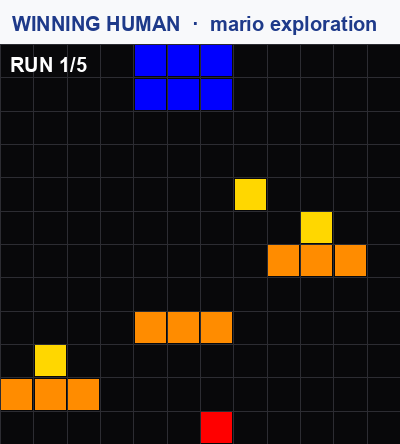
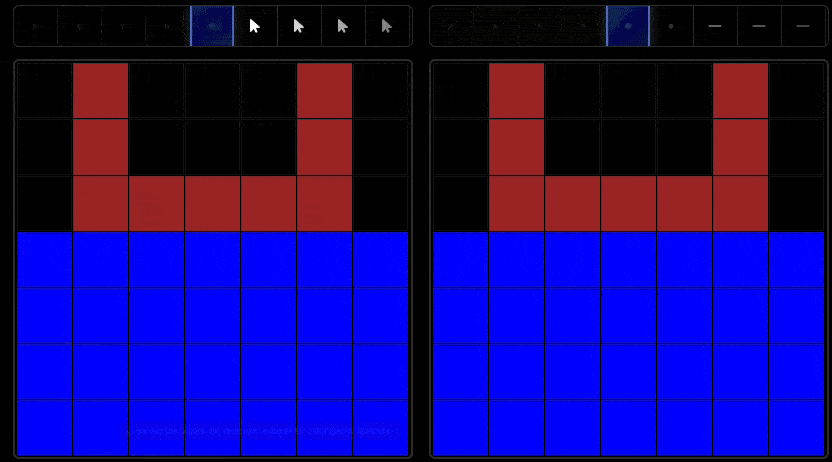

Benchmarking World-Model Learning
with Environment-Level Queries
A behavior-based benchmark for world-model learning. 517 humans versus five frontier AI models.
Archana Warrier · Dat Nguyen · Michelangelo Naim · Moksh Jain · Yichao Liang · Karen Schroeder · Cambridge Yang · Joshua B. Tenenbaum · Sebastian Vollmer · Kevin Ellis · Zenna Tavares
ICML 2026 · PMLR 306, Seoul


Roadmap
Where we are going, in five parts
Why world models matter
A flexible, predictive, counterfactual understanding of how an environment works. Learning one is a pivotal open problem for the next step in AI.
A worked example. Someone who cooks regularly builds an internal model of their kitchen: where tools live, how appliances behave. That one model is general-purpose. It supports many different everyday capabilities about the same environment, not just a single task.
Estimate how long the hidden contents of a covered pot will take to finish cooking, from the steam and the elapsed time.
Recognize and adapt to changes in the kitchen, such as a knife that has been moved to a different drawer.
Plan a sequence of actions to complete a set of recipes, ordering steps so everything comes together.
Hold on to these three. They come back as the benchmark's three tests.
Why current evaluations fall short
World models are central to flexible reasoning and planning, yet we mostly measure them one trajectory at a time
The gap. Today's metrics test only properties measurable from one observed interaction. A general-purpose world model should answer many different questions about an environment, including its global structure and counterfactual consequences. We do not test that.
Trajectory-level metrics such as next-frame prediction (does the model predict the next observation) and task return (does it score well on one fixed goal). Both read off a single observed run.
Whether the model supports diverse questions: the environment's global structure and the counterfactual consequences of actions it has not yet seen. A model can ace next-frame prediction and still understand the world poorly.
What would a test of that even look like?
The idea: ask questions about the whole environment
In one line. A world model is an agent's internal model of how its environment works. WorldTest is a behavior-based way to test whether a learned world model can answer many different questions about an environment, not just predict the next frame. We use it to compare 517 humans against five frontier AI models.
Before the how: does anything existing already test this?
The evaluation landscape and what it misses
Four families of benchmarks each probe an agent's knowledge in an incomplete way.
Infer hidden rules from a few static examples (ARC, RAVEN, CLEVR variants).
Misses: no learning through interaction with a dynamic environment.
Require a fixed output format (next frames, programs, causal graphs) scored by format-specific proxies.
Misses: the proxies are often inadequate, so they cannot faithfully measure the learned model or benchmark agents against humans.
Decision-making with explicit rewards (Atari, Gym, Procgen, NetHack).
Misses: measures task success, not world-model quality; a memorized policy can win.
Two-phase protocols (URLB): explore without objectives, then face downstream tasks.
Misses: both phases use the same environment, and evaluation sees only action-reward sequences, so structural and counterfactual understanding goes untested.
Punchline. AutumnBench is the only benchmark that is representation-agnostic AND reward-free in training AND uses a modified test environment.
What non-interactive looks like: infer from fixed examples
Two classic benchmarks. ARC (Chollet, 2019): infer a grid rule from input to output examples. CLEVR (Johnson et al., 2017): answer a compositional question about one rendered scene. In both, you never act in the world.
The common thread. Both are static: you infer from fixed examples or one rendered image, and never act in the environment to gather its dynamics. WorldTest's move: let the agent interact with a live world first, learn the dynamics by doing, then answer.
What representation-based looks like: the format is the exam
The agent must produce a fixed output format, then a format-specific proxy scores it. Moving MNIST (Srivastava et al., 2015): predict the next video frame, scored by reconstruction error.
Low pixel error: scored well.
Higher pixel error: scored worse.
scored by reconstruction error (Moving MNIST, BAIR robot pushing)
scored by LLM-based evaluation (DiscoveryWorld)
scored by predicate accuracy (CLEVRER, CATER, CausalWorld)
The common thread. These proxies are often inadequate: they measure fit to the format, not the world model, and they lock out agents (and humans) whose knowledge is not expressible in that format. WorldTest's move: score behavior in a challenge environment, so any internal representation competes on equal terms.
What gym-like looks like: chase the reward
Decision-making with explicit rewards: Atari / ALE (Bellemare et al., 2013), OpenAI Gym, ProcGen, NetHack. The score IS the reward counter. Schematic below, in the style of Breakout.
The common thread. Reward measures task success, not world-model quality: high performance may come from a memorized policy rather than a generalizable grasp of the environment's structure. WorldTest's move: no reward during learning at all; the score comes from answering queries about how the world works.
What unsupervised RL looks like: two phases, one world
The closest relative of WorldTest. URLB (Laskin et al., 2021): first explore with no reward, then face downstream reward tasks. But both phases run in the very same environment.
The common thread. Two phases, but one environment and reward-based evaluation: properties you cannot observe through action-reward sequences, like structure and counterfactuals, go untested. WorldTest's move: compile each query into a modified challenge environment, so the test itself probes what the agent knows about the world.
The key idea: environment-level queries
Questions whose answers depend on the entire environment, not on one observed trajectory
Definition. An environment-level query is a question about a property of the whole environment. Answering it requires understanding the underlying rules, not just replaying what was seen. Contrast with a trajectory-level metric like next-frame prediction, which only checks one run.
What is hidden behind an occlusion. Infer the parts of the environment you cannot directly see.
Detect a change in the environment's dynamics. Notice when a rule of the world has shifted.
Determine whether one state is reachable from another. Reason about the global structure of what is possible.
These are the kinds of questions a flexible world model should handle. The next step is a way to score them fairly across very different agents.
WorldTest: a two-phase, behavior-based protocol
Evaluate world-model learning via environment-level queries, without constraining the agent's representation or tying interaction to a fixed reward
The agent explores on its own with no external goals or rewards. It may reset the environment to its initial state at any time, to test hypotheses. It ends the phase when it chooses; finite resources, not a hard clock, limit exploration. It may build any internal representation it likes: a program, a latent code, a neural net.
\( \hat{M} = A(\tau_{\text{explore}}), \quad \tau_{\text{explore}} \sim E \)
training-free; the agent is the protocol
A query becomes a challenge environment: the same world with one or more components changed (its transitions, observations, or actions) plus an explicit objective. The score depends only on behavior here.
\( \text{ans}_q(\hat{M}) \equiv R_q\bigl(\tau_{E_q}\bigr) \)
solving the task ≡ answering the query
Scored by behavior alone. No peeking inside the agent, no manual or AI judging, so humans and AI compare on equal terms.
Reward-free exploration encourages learning transferable dynamics, not optimizing one task-specific objective.
The test compiles each query into an objective, directly measuring whether the model supports downstream inference and planning.
The protocol, step by step
A query is a question about the whole environment. WorldTest compiles it into a challenge environment with an explicit goal, then scores the agent's behavior there.
The transformation. A fixed rule \( \tau \) takes the base reward-free environment plus a hidden task parameter and produces a modified environment, an objective, and a horizon \( H \). The modified environment differs from the base by changes to its state, dynamics, observations, or rewards. Completing the objective answers the query.
Reveal the task type: the challenge actions, observations, and the form of the objective. The hidden parameters stay secret.
Explore the base environment reward-free. Reset to the start or proceed at will, building an internal model.
On proceeding, sample the hidden parameters and apply \( \tau \) to build the modified environment, objective, and horizon \( H \).
Produce a policy from the learned model and from knowledge of how tau reshaped the world.
Run the policy in the modified environment for H steps.
Score the resulting behavior against the objective. No internals, no judge.
Because the parameters are hidden until the agent proceeds, it cannot prepare for one specific answer. It must learn dynamics that generalize across the whole challenge space.
The Autumn language
AutumnBench worlds are written in Autumn, a functional reactive language for specifying causal interactions in 2D grids (Das et al. 2023).
Why Autumn. It lets you specify environments succinctly, expressively, and extensibly. Crucially, one specification drives both a text-based interface for AI agents and a browser-based graphical interface for humans, so the exact same world is played by both.
(on cond body) · sand.sexp / ants.sexp; from sand.sexp: conditional rules
(on (clicked sandButton)
(= clickType "sand"))
(on (& (clicked) (isFreePos click)
(== clickType "water"))
(= water (addObj water ...)))
; from ants.sexp: spatial, temporal, stochastic
(closest obj foods)
(filter (--> obj (! (intersects obj (prev ants))))
(prev foods))
(randomPositions GRID_SIZE 2)(on cond body) is the conditional rule form: the guard is evaluated against the current state each tick and the body fires when it holds. The stdlib adds spatial operators (closest, intersects), temporal reads (prev reads the last tick), and stochastic primitives (randomPositions).
This GUI is what humans play; AI agents get the same world as text (a 2D array of color strings). One world, two interfaces, fair comparison.
AutumnBench: WorldTest made concrete
The kitchen test, formalized: Predict becomes Masked Frame Prediction, Adapt becomes Change Detection, Plan becomes Planning.

How it was run: same benchmark, two interfaces
Humans play the exact same world in a browser; AI models play it in text. The behavior-only scoring lets us compare them directly.
517 participants recruited via Prolific and screened for attention and color blindness. They play in a browser GUI updating at roughly 3 to 8 frames per second. The reported human is an aggregate agent: the 80th-percentile score across 20 attempts per problem.
Five frontier reasoning models: Claude 4 Sonnet, Gemini 2.5 Pro, Gemini 2.5 Flash, o3, Qwen3-235b-a22b-thinking-2507. Each is given its full interaction history, the current grid state, the available actions, and a task-type description.
One trajectory per problem, due to cost constraints.
A simulator agent with ground-truth program access is included only as a reference point, not as a competitor. It shows what is achievable when the underlying rules are known.
Result
517 human participants vs five frontier reasoning models (Claude 4 Sonnet, Gemini 2.5 Pro, Gemini 2.5 Flash, o3, Qwen3-235B). Human score = the 80th-percentile score across 20 attempts per problem. A simulator with ground-truth program access is shown only as a reference.
Panel (a): models did better on stochastic environments than deterministic ones; humans were nearly identical across both. More on that next. Bars carry standard-error whiskers; panel (c) shows one dot per environment, circle = mean.
Stochastic vs deterministic: a telling split
Stochastic = the same action from the same state can give different outcomes; deterministic = it always gives the same outcome
Finding. The five reasoning models scored significantly higher on stochastic environments than on deterministic ones. Humans were nearly identical across both.
Reasoning models performed significantly better on stochastic environments than on deterministic ones.
Their score depends on the kind of environment they are dropped into. 19 of the 43 environments are stochastic: the same action from the same state can produce different outcomes.
Humans maintained nearly identical performance on stochastic and deterministic environments.
Whatever humans learn during exploration, it carries across both kinds of world with barely any change in score.
The paper reports this split as an observation (Figure 3a) and does not attribute a cause. What it shows directly: model performance swings with the type of environment, and human performance does not.
More compute is not the fix
Spending more on each problem rarely closed the gap to human performance
The test. Rank the five models by cost-per-problem (Gemini Flash, Qwen3, Gemini Pro, Claude Sonnet, o3, ascending) and check whether score climbs with budget. In 25 of 43 environments it does; in 18 of 43 (42%) it plateaus or decreases. No environment is solved perfectly by the cheapest model. By task: MFP improves in 16 of 43, planning in 16, change detection in only 14. (Appendix E.3.3)
Model scores improve with compute on masked frame prediction and change detection here. Click the panel, then arrow keys move mario.
bbq, carrace, chinese_checkers, and crystallization show no improvement in any task: their difficulty sits at extremes that additional compute cannot address. Click the grill to light it, the yellow button to add gas.
In most cases more compute did not help. This points to reasoning limitations beyond scaling, not a shortage of compute. Both worlds above run live on the Autumn WASM interpreter, loaded from the official benchmark release (Zenodo 19498269; mario = N2NTD, bbq = 27VWC).
Humans explore by experimenting
During exploration the agent can reset the environment to its initial state at will. Humans treat reset as an experimental tool; models mostly do not.
The signature. Humans reset at least once in every environment and beat the per-environment model reset-mean in 33 of 43. Models often skip resets entirely: Claude in 31 environments, Qwen in 8, Gemini Pro in 7, Gemini Flash in 4, o3 in 3.
Reset, and run it again
A real human trajectory on the mario environment, free-exploration phase.

This is the top-scoring human on the mario planning task. During free exploration, before the scored test, they reset the environment and ran it again, five times over. For a person, reset is an experimental tool: replay the setup and watch how the rules behave. Across the benchmark, models rarely reset at all.
Rendered from the AutumnBench human-participant trajectories (verified winner, score 0.985). The five runs are real; playback is time-compressed.
Watch the difference
The same Autumn environment, played side by side.

The contrast the clip makes visible is the one the numbers make precise. Humans treat reset as an experiment, re-running controlled variations, and spend about a quarter of their actions on resets and no-ops. Every model stays under 7 percent and rarely resets at all.
Source: Basis Research Institute · autumn.basis.ai
Humans update their beliefs
Reasoning models often fail to update their beliefs when faced with contradictory evidence, especially in masked frame prediction.
Even after they notice that test observations contradict the rules they learned, they keep predicting from the original rules.
Humans reach lower normalized perplexity over their interaction: a lower area-under-the-curve of perplexity as exploration proceeds.
In plain words, they are less surprised by what comes next. Their learning is more targeted and better calibrated, so they revise toward the rules that actually hold.
Take the action sequences immediately before and after each reset and compute their longest-common-subsequence ratio. Replaying a similar sequence gives a ratio near 1; unstructured resets give a ratio near 0. Humans sit at 0.827; every model sits far below, and the difference is statistically significant for each model (Appendix E.6).
Rerunning a controlled variation of your last experiment is the signature of hypothesis testing, matching behavior documented in cognitive science, quoted below. Scratchpad analysis shows the contrast: models rarely revise their hypotheses after unexpected observations. One caveat, stated in the paper's own terms: this link is correlational; testing it causally would need designs that manipulate reset availability.
“Instead, people select strategies in an adaptive fashion that trades off their expected performance and cognitive effort.”
“…learners who freely interacted with the physical system selectively produced evidence that revealed the physical property consistent with their inquiry goal.”
Closing the gap likely needs not only better priors but advances in flexible belief updating, not just more compute.
What the gap really means
The human advantage is not mainly about raw knowledge; it traces to two capabilities the models lack
Conclusion. Current frontier models lack the flexible, predictive understanding that characterizes human-like world models. The gap is not mainly a knowledge gap. It traces to two capabilities: how an agent designs experiments to test its hypotheses, and how it revises its beliefs when the evidence contradicts them.
Humans use resets and interventions to test hypotheses: they reset in every environment and replay similar action subsequences around resets. Models often skip resets entirely and spend almost none of their actions probing the world.
Humans revise their beliefs under contradiction and reach lower perplexity over interaction. Models often keep relying on the rules they first learned, even after noticing that the test observations contradict them.
More compute does not supply either capability: 42% of environments saw no benefit from extra compute. The missing pieces are behavioral, not just scale.
Limitations and what is next
AutumnBench demonstrates WorldTest in a grid-world; the framework itself is broader
Scope. AutumnBench is one instantiation of WorldTest in 2D grid-worlds. The protocol does not depend on grids: it is a general recipe for compiling environment-level queries into behavior-scored challenge environments, with open directions on both the benchmark side and the methodology side.
Future work may instantiate WorldTest in physics-rich environments, robotics, multi-agent systems, and other rich-dynamics domains, well beyond 2D grids.
Model performance is sensitive to prompt formulation. The authors recommend reporting results across multiple prompt formulations with variance bars.
The reset-as-experiment account is correlational. Establishing a causal link needs interventional designs, left to future work.
These caveats bound the present claims without weakening the framework: WorldTest is the recipe, and AutumnBench is just the first dish.
Recap: test, benchmark, finding
One protocol, one benchmark, one clear result about where frontier models stand
In sum. WorldTest is a behavior-based, two-phase, representation-agnostic protocol that evaluates world-model learning via environment-level queries. AutumnBench instantiates it; 517 humans substantially outperform five frontier reasoning models, and more compute does not close the gap.
A two-phase, representation-agnostic protocol: explore reward-free, then answer an environment-level query compiled into an explicit objective. Scored by behavior alone, so any agent type compares fairly.
AutumnBench: 43 environments, 129 tasks, three query families (masked frame prediction, change detection, planning), playable by both humans and AI.
517 humans substantially outperform all five frontier reasoning models on every environment and every task type, and more compute does not close the gap.
Takeaway and resources
Warrier et al., ICML 2026 · public dataset, web GUI, interpreter, and baselines all available
Bottom line. Current frontier models lack the flexible, predictive understanding of human-like world models. Closing the gap likely needs better priors and advances in strategic experimental design, uncertainty quantification, and flexible belief updating, not just more compute.
A representation-agnostic, automatically scored test of world-model learning that puts humans and AI on equal footing.
43 environments, 129 tasks, three query families, built in the Autumn language for causal 2D-grid interactions and designed to be extensible.
Web GUI: autumn.basis.ai
Interpreter: github.com/BasisResearch/Autumn.cpp
Baselines: github.com/BasisResearch/MARAProtocol
The public AutumnBench dataset, browser GUI, Autumn interpreter (WASM / Python / Julia), and reasoning-model baselines are all available.
The team
Eleven authors across Basis Research Institute, DFKI, Harvard, Mila / Universite de Montreal, Cambridge, MIT, and Cornell
Thank you. Try AutumnBench at autumn.basis.ai.